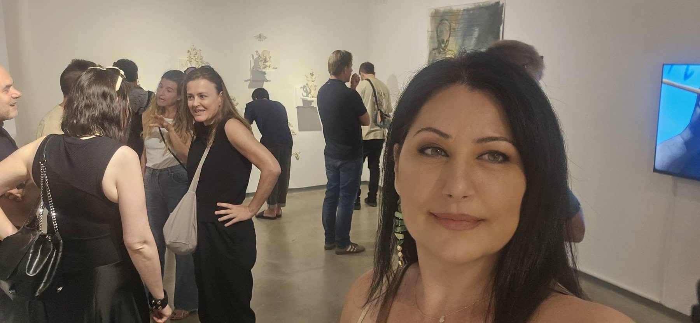
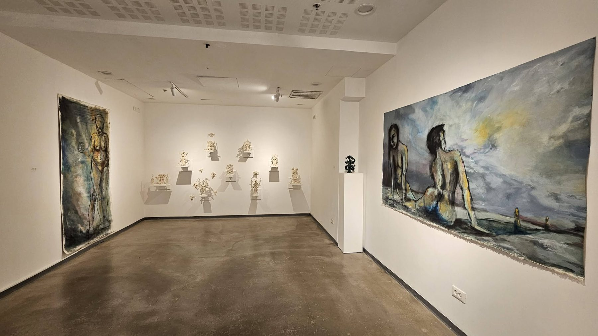
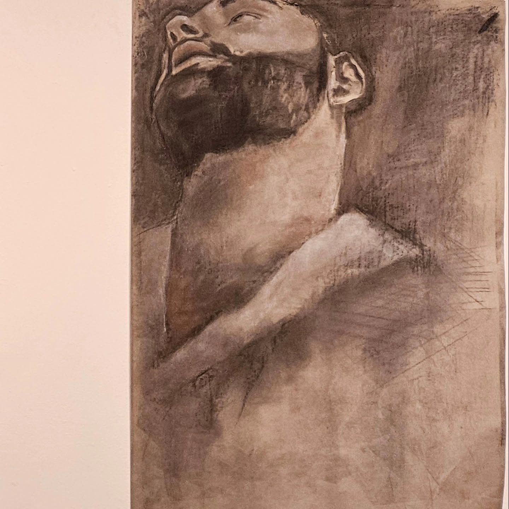
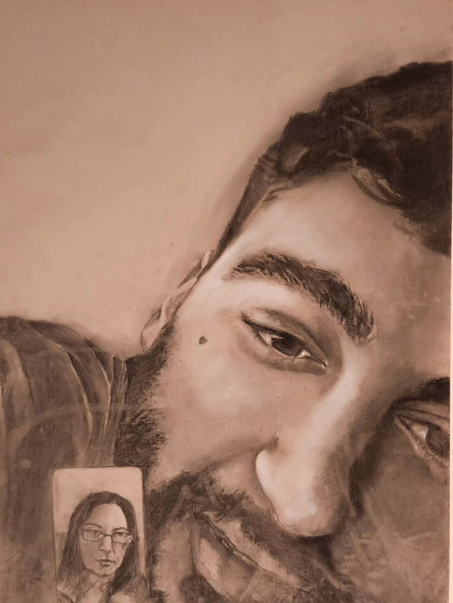
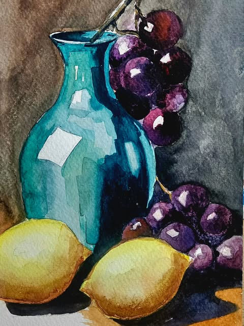
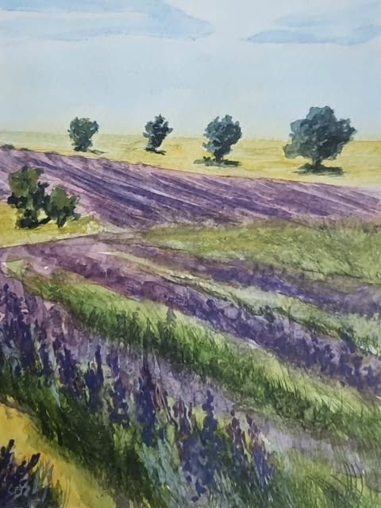
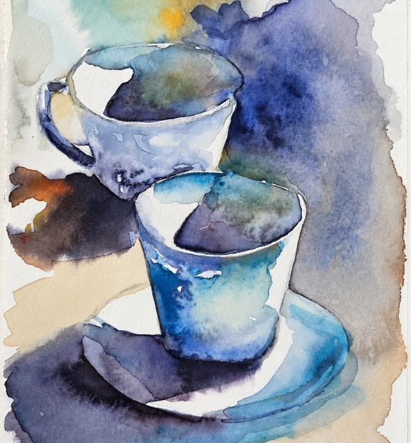
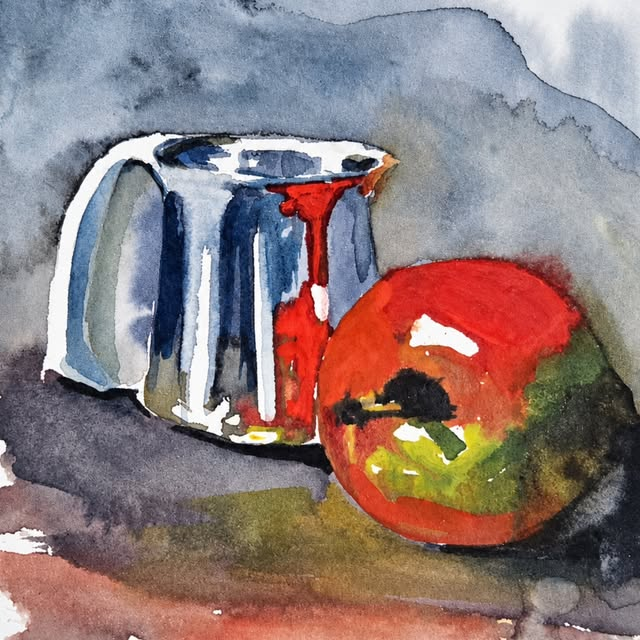

אמנות, חינוך ומה שביניהם
אמנות שנוגעת בחינוך. חינוך שנוגע באמנות.

שלום, אני אנג'ל כליף
כבר יותר מ-20 שנה אני יוצרת אמנות, ו-17 שנה אני מלמדת בבתי ספר. לאורך השנים השלמתי שני תארים, באמנות ובהוראה, מתוך רצון לחבר בין עולם היצירה לעולם החינוך.
אני אמנית מציגה, שיוצרת גם במרחב הציבורי, כולל אמנות רחוב. ואני מורה שמכירה את היום-יום של התלמידים מקרוב. מהשילוב הזה נולד מבט כפול:
- עין אמנותית: קצב, תנועה ואנרגיה צבעונית שמדברת לתלמידים של היום.
- הבנה פדגוגית: סביבת למידה מעוצבת היא לא מותרות. היא חלק מתוכנית הלימודים.
קיר מצויר היטב יכול להסביר מושג מורכב, לחזק ערכים של דרך ארץ וקהילה, להפוך פינה נשכחת למרחב מרגיע, או לתת לתלמיד רגע של השראה בין שיעור לשיעור.
אני גרה ביבנה ועובדת בכל האזור, בטווח של כ-50 ק"מ.
למה דווקא אני
ציור קיר בבית ספר הוא לא רק תמונה יפה, הוא כלי חינוכי. כדי שיעבוד ויחזיק מעמד, הוא צריך להבין תלמידים, מורים ופדגוגיה.
הבנה פדגוגית
התוכן החזותי מותאם למטרות הלימודיות והחינוכיות של בית הספר.
מדברת את השפה
17 שנות ניסיון במערכת החינוך. בלי צורך בהסברים ובליווי צמוד.
רמה אמנותית
אמנית יוצרת ומציגה עם שני תארים, שמביאה סגנון עכשווי עם קצב ותנועה.
מתאימה לגיל
בחירה מדויקת של תכנים וצבעים לפי השלב ההתפתחותי והרגשי של התלמידים.
תערוכות ועיתונות
ציורים גדולים בפחם, פסטל וצבע, שהוצגו בתערוכת הבוגרים של מסלול ABR אמנות בסמינר הקיבוצים, בגלריה אחד העם 9 במגדל שלום בתל אביב. אחת העבודות שלי נבחרה ללוות את הכתבה על התערוכה במגזין טיים אאוט.



מהסטודיו שלי
לצד העבודה על קירות וחללים, אני מציירת כל הזמן. הנה כמה מהציורים האחרונים.




בואו נהפוך את הקירות שלכם לחוויה לימודית
ספרו לי על המקום ועל מה שאתם רוצים שיקרה בו. אחזור אליכם עם ייעוץ ראשוני והצעת מחיר.